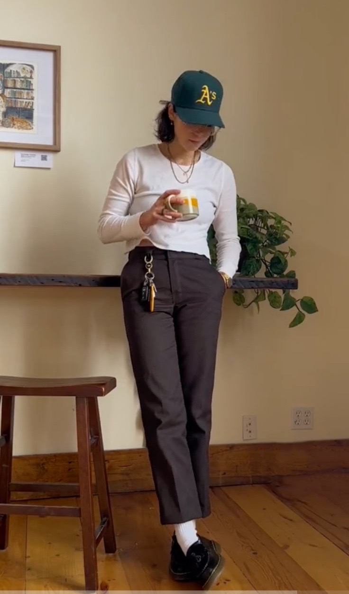

SPRING
 Garden Green
An outfit centered around the t-shirt with the quote "F*ck Off. I'm Gardening". This fit features different shades of green with many accessories like a hat and sunglasses to tie the entire look together.
Garden Green
An outfit centered around the t-shirt with the quote "F*ck Off. I'm Gardening". This fit features different shades of green with many accessories like a hat and sunglasses to tie the entire look together.
 Black Gray White
A simple outfit made up of just three colors: black, gray, and white. This color combination combined with the cozy warm fit is perfect for a gloomy spring day.
Black Gray White
A simple outfit made up of just three colors: black, gray, and white. This color combination combined with the cozy warm fit is perfect for a gloomy spring day.
 Casual Tans
Casual Tans is a relaxed yet stylish outfit that combines a beige short-sleeved button-up shirt with brown trouser-style pants. This versatile ensemble is perfect for a casual day out.
Casual Tans
Casual Tans is a relaxed yet stylish outfit that combines a beige short-sleeved button-up shirt with brown trouser-style pants. This versatile ensemble is perfect for a casual day out.

Coffee Shop
Coffee Shop is a trendy outfit that features a white waffle long-sleeved shirt and brown Dickies pants paired with an Oakland Athletics 1995 Road Hat in dark green and gold. This ensemble is perfect for a casual coffee date or hanging out with friends.